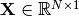
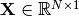

Creating new Models¶
In GPy all models inherit from the base class Parameterized. Parameterized is a class which allows for parameterization of objects. All it holds is functionality for tying, bounding and fixing of parameters. It also provides the functionality of searching and manipulating parameters by regular expression syntax. See Parameterized for more information.
The Model class provides parameter introspection, objective function and optimization.
In order to fully use all functionality of
Model some methods need to be implemented
/ overridden. And the model needs to be told its parameters, such
that it can provide optimized parameter distribution and handling.
In order to explain the functionality of those methods
we will use a wrapper to the numpy rosen function, which holds
input parameters  . Where
.
. Where
.
Obligatory methods¶
__init__():Initialize the model with the given parameters. These need to be added to the model by calling self.add_parameter(<param>), where param needs to be a parameter handle (See parameterized_ for details).:
self.X = GPy.Param("input", X) self.add_parameter(self.X)
log_likelihood():Returns the log-likelihood of the new model. For our example this is just the call to
rosenand as we want to minimize it, we need to negate the objective.:return -scipy.optimize.rosen(self.X)
parameters_changed():Updates the internal state of the model and sets the gradient of each parameter handle in the hierarchy with respect to the log_likelihod. Thus here we need to set the negative derivative of the rosenbrock function for the parameters. In this case it is the gradient for self.X.:
self.X.gradient = -scipy.optimize.rosen_der(self.X)
Here the full code for the Rosen class:
from GPy import Model, Param
import scipy
class Rosen(Model):
def __init__(self, X, name='rosenbrock'):
super(Rosen, self).__init__(name=name)
self.X = Param("input", X)
self.add_parameter(self.X)
def log_likelihood(self):
return -scipy.optimize.rosen(self.X)
def parameters_changed(self):
self.X.gradient = -scipy.optimize.rosen_der(self.X)
In order to test the newly created model, we can check the gradients and optimize a standard rosenbrock run:
>>> m = Rosen(np.array([-1,-1]))
>>> print m
Name : rosenbrock
Log-likelihood : -404.0
Number of Parameters : 2
Parameters:
rosenbrock. | Value | Constraint | Prior | Tied to
input | (2,) | | |
>>> m.checkgrad(verbose=True)
Name | Ratio | Difference | Analytical | Numerical
------------------------------------------------------------------------------------------
rosenbrock.input[[0]] | 1.000000 | 0.000000 | -804.000000 | -804.000000
rosenbrock.input[[1]] | 1.000000 | 0.000000 | -400.000000 | -400.000000
>>> m.optimize()
>>> print m
Name : rosenbrock
Log-likelihood : -6.52150088871e-15
Number of Parameters : 2
Parameters:
rosenbrock. | Value | Constraint | Prior | Tied to
input | (2,) | | |
>>> print m.input
Index | rosenbrock.input | Constraint | Prior | Tied to
[0] | 0.99999994 | | | N/A
[1] | 0.99999987 | | | N/A
>>> print m.gradient
[ -1.91169809e-06, 1.01852309e-06]
This is the optimium for the 2D Rosenbrock function, as expected, and the gradient of the inputs are almost zero.
Optional methods¶
Currently none.